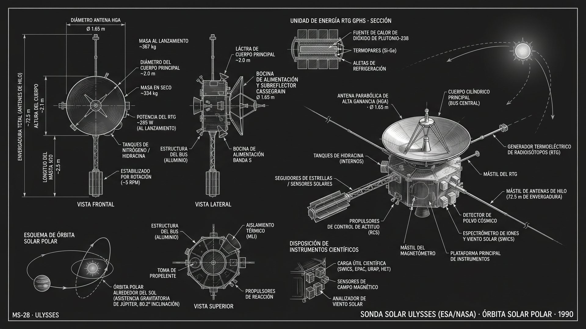

Ulysses

Fue la primera nave en mirar los polos del Sol, por encima y por debajo del plano de los planetas, y allí el viento solar soplaba al doble de velocidad. Iba a durar cinco años y duró más de dieciocho.
La misión terminó el 30 de junio de 2009: se ordenó el paso a la antena de baja ganancia a las 20:09 UTC y el apagado del transmisor a las 20:15 UTC. Su órbita heliocéntrica la aleja de la Tierra. Personas: Richard Marsden, Ed Smith, Arik Posner, Nigel Angold
Lo que hizo
- Mi encargo — Estudiar el Sol por encima y por debajo del plano de los planetas, algo que ninguna nave había hecho. Se lanzó en la bodega del transbordador Discovery el 6 de octubre de 1990.
- Los polos del Sol — Entre 1994 y 1995 pasé sobre el polo sur y el polo norte del Sol y llegué a 80,2 grados de latitud solar. El 12 de marzo de 1995 me acerqué a unos 200 millones de kilómetros del Sol.
- El último mensaje — El 30 de junio de 2009 se apagó mi transmisor, tras más de dieciocho años y medio de servicio: más de cuatro veces la vida útil prevista. Mi órbita sigue alejándome de la Tierra.
Modelo 3D, chat y cómic, en tres idiomas
Fuentes
- science.nasa.gov/mission/ulysses/
- www.jpl.nasa.gov/news/ulysses-spacecraft-ends-historic-mission-of-discovery/
- www.esa.int/missions/about-us/directorates/science/ulysses-overview
Ver el índice completo · Proyecto del NASA Space Apps Challenge 2026. Contenido con fuentes citadas.